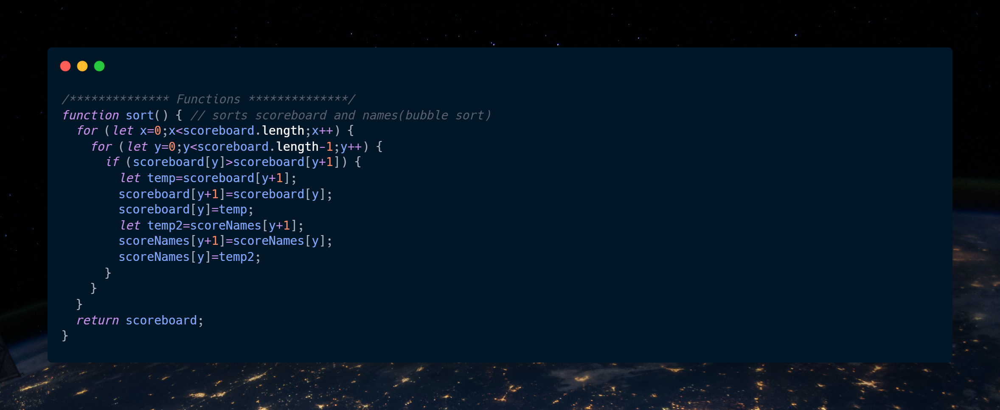

All the game mechanics are global variables because they span across multiple scenes.
This bubble sort function is a parameter with a return value. It sorts the scores from lowest to highest as well as the corresponding names. This is used later in the scoreboard.
The Math.abs is considered a function with a parameter and return value. This function is used to find the absolute value of a number. In short, it makes the value of the parameter a positive.

The two functions above are identical but differ because one is for player 1 and the other is for player 2. This is a function with parameters and a return value. These functions are responsible for calculating the scores throughout the game.
The first string function is used to capitalize all the letters of a string inside of an array. This makes it so the names are all capitalized in the scoreboard and hud.

This second string function used here is to detect how long the players name is. If the name is over 10, it will tell them to re-enter it.
The first array example is used where it detects the absolute velocities of the 2 players right before collision. This allows us to calculate which player is travelling faster right before impact.
The second array example is used inside of the bubble sort. This allows for the ordering from least to greatest to display later in the scoreboard.